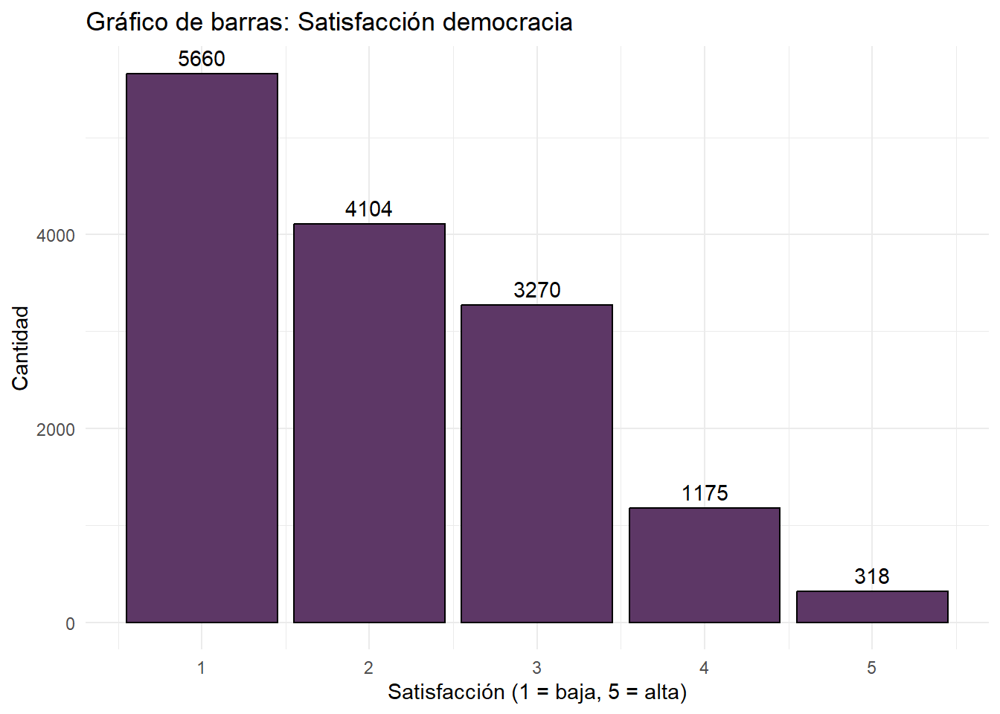
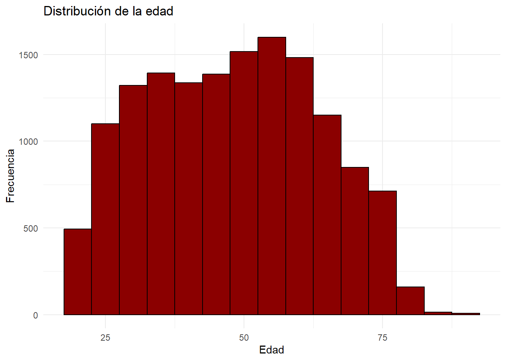
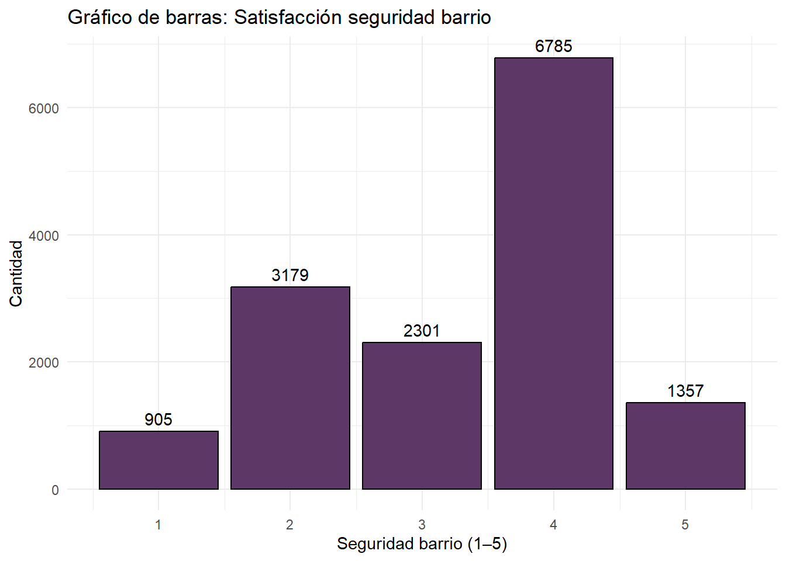
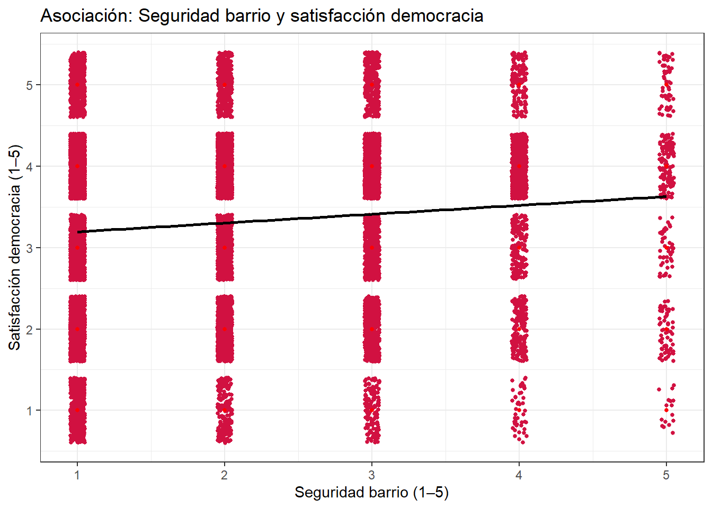
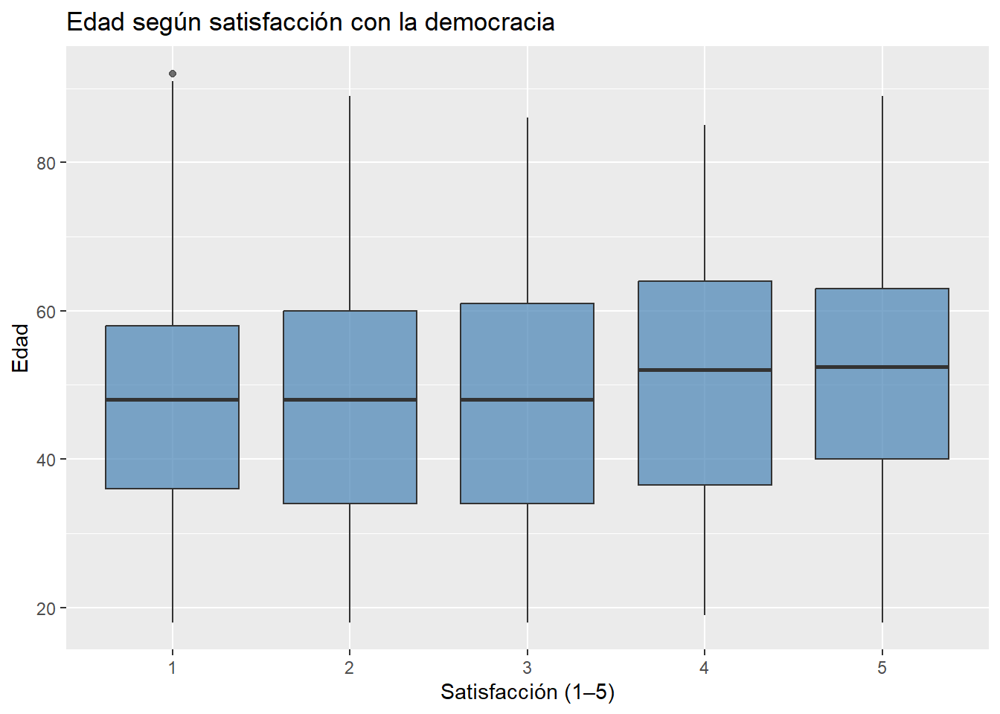

| vars | n | mean | sd | median | trimmed | mad | min | max | range | skew | kurtosis | se | |
|---|---|---|---|---|---|---|---|---|---|---|---|---|---|
| satisfaccion_democracia_categorica | 1 | 14527 | 2.0629173 | 1.0636657 | 2 | 1.9263529 | 1.4826 | 1 | 5 | 4 | 0.7144681 | -0.3135813 | 0.0088250 |
| sexo_categorica | 2 | 14527 | 0.6129965 | 0.4870812 | 1 | 0.6412286 | 0.0000 | 0 | 1 | 1 | -0.4639420 | -1.7848807 | 0.0040412 |
| satisfaccion_seguridad_barrio_categorica | 3 | 14527 | 3.3104564 | 1.1011066 | 4 | 3.3491353 | 1.4826 | 1 | 5 | 4 | -0.4958177 | -0.7626794 | 0.0091357 |
| edad_entrevistado_continua | 4 | 14527 | 47.9770083 | 15.4413083 | 48 | 47.8126990 | 17.7912 | 18 | 92 | 74 | 0.0525004 | -0.9572560 | 0.1281139 |
Seguridad barrial, edad y sexo y su impacto en la satisfacción con la democracia en Chile: Análisis en base al Estudio Longitudinal Social de Chile.
integrantes: Camilo Núñez, Sebastian Llanos, Armando Álvarez, Kintrüy Ancaten y Elisa Palma
Profesor de Cátedra: Juan Castillo
Profesor colaborador: Kevin Carrasco
Cuarto semestre Sociología
Fecha: 22/11/25
Resumen
Latinoamérica a mediados del siglo pasado se cubrió bajo el velo de las dictaduras en países como Brasil, Panamá, Guatemala, Nicaragua, Paraguay, Argentina y Chile. En nuestro país en específico, el retorno a la democracia generó grandes expectativas sobre la (re)construcción de la nación, pero a día de hoy se pone en duda el “fallido” proyecto de democracia en Chile, expresándose en el descontento social generalizado en patologías sociales. En base al Estudio Longitudinal Social de Chile (ELSOC) realizado por el Centro de Estudios de Conflicto y Cohesión Social (COES) este estudio tiene de objetivo general estudiar los niveles de satisfacción con el régimen democratico chileno ad portas de unas elecciones caracterizadas por candidatos “extremos”, esto a través de revisar tres hipótesis, se espera que a mayor satisfacción son la seguridad en el barrio mayor sea la satisfacción con la democracia (H1), en segundo lugar se espera que a menor edad del encuestado menor satisfacción con la democracia (H2) y por último se espera que a mayor edad mayor sea la satisfacción con la democracia (H3).
1 Introducción
En 1990 Chile retornó a la democracia después de 17 años de la dictadura encabezada por Augusto Pinochet Ugarte. 35 años después, el proyecto democrativo tambalea por culpa de las propias expectativas que generó y más específicamente por la naturaleza latinoamericana de su “dinámica sociopolítica convulsionada” (Natalucci et al. 2025, p. 2). En la actualidad, se vive una contingencia respecto a una democracia debilitada, producto de un proceso marcado por proyectos de izquierda en búsqueda de consolidarse como gobiernos progresistas y una respuesta (como si de un péndulo se tratase) de proyectos con tendencias de extrema derecha e ideologías económicas de reducción del Estado que han consolidado en general una democracia puesta en duda desde distintos sectores del espectro político, enfrentamientos constantes entre extremos izquierdos y derechos, procesos de protestas que surgen como respuesta al agotamiento social y un “deterioro significativo de las condiciones de vida y calidad de la democracia” (Natalucci et al. 2025, p. 2). Es entonces la temática central de este estudio la satisfacción de la ciudadanía con respecto a la democracia.
El debilitamiento de la democracia producto de la oscilación entre proyectos de izquierda y derecha suele asociarse a “patologías” en la sociedad como la desigualdad económica y social persistente, crisis de la representación política, instituciones frágiles, demandas históricas sin respuesta, represión excesiva por parte del Estado, el lento avance en materia de igualdad de género/sexo y el descontento generalizado de cohortes etarias (Avendaño, 2019). Son las últimas dos variables (sexo y edad) las que conducen este estudio para evaluar la satisfacción de la ciudadanía con respecto a la democracia en Chile, sumando la satisfacción con la seguridad barrial en el contexto de un país azotado por un nivel de sensación de inseguridad alto (Lissardy, 2025).
El objetivo principal de este estudio es entender el debilitamiento de la satisfacción respecto a la democracia a través de tres variables.
Con respecto al sexo, hay que considerar la problemática histórica de la desigualdad entre hombres y mujeres, que ha llevado a las mujeres a estar en una casi perpetua desigualdad social, económica y política a comparación de los hombres. Según Hansen y Goenaga (2021), existe una relación negativa entre ser mujer y estar satisfecha respecto a la democracia, esto en un marco donde las mujeres están menos satisfechas con la protección social referente (por ejemplo) a la reducción ineficiente de la brecha de ingresos entre hombres y mujeres. Es en este contexto que el presente estudio incluye al sexo como una variable para evaular la satisfacción con la democracia en el sentido de que una democracia firme debería de generar igualdad entre sexos/géneros.
Por otro lado, la edad/cohortes etarios como variable para evaluar la satisfacción con la democracia corresponde al hecho de que existen grupos etarios menos satisfechos con el proyecto democratico chileno. En la investigación de Bargsted, Somma y Muñoz (2019) se establece que en desde la vuelta a la democracia ha existido un declive notable y sostenido en las participación de elecciones en el país (Bargsted et al. 2019, p.2). La investigación sostiene que el grupo etario con menor participación política en la actualidad son los adultos jóvenes (18 a 35 años) estos hallazgos sugieren que los adultos jóvenes se encuentran con desafección política lo que refleja una desconexión con el sistema político institucional, mientras que los grupos más mayores tienen niveles de participación mayor y más conformidad con la democracia. Por otro lado, la investigación de Morales (2020) se conecta a la realidad expuesta por la investigación anterior con respecto a la baja participación política de los adultos jóvenes y ahonda en la satisfacción de este grupo etario con respecto al funcionamiento de la democracia, exponiendo que son un grupo que si bien ha vivido prácticamente toda su vida en democracia, han presenciado el desgaste de la misma y plantea 4 crisis que explican esta “desilución” con el proyecto democratico chileno post dictadura: 1) crisis de la participación (ya mencionada) 2) crisis de representación 3) crisis de la confianza institucional y 4) crisis de probidad. Se entiende también a partir de esta investigación que a medida que la edad aumenta los niveles de disconformidad con el proyecto democratico baja como una expresión del asentamiento.
La última variable a estudiar es la referente a los niveles de satisfacción con la seguridad del barrio. En el estudio de Alvarado (2024) se entiende seguridad barrial como la ausencia de actividades delictivas visibles, como por ejemplo, la venta de droga. La relación es simple, si existe inseguridad y por ende victimización la confianza y la satisfacción con las instituciones policiales, el Estado y el régimen democratico se erosiona, y al revés, si existe una percepción positiva con respecto a la seguridad del barrio se traduce en mayor aprobación a la democracia: “la satisfacción con el régimen está asociada con una percepción de menor presencia del crimen, así como con una buena valoración del trabajo policial y la confianza en la autoridad del Estado” (Alvarado, 2024, p. 20).
Las hipótesis que surgen a partir de la selección y el estudio de las variables aquí presentes son las siguientes: H1: se espera que a mayor satisfacción de la seguridad en el barrio mayor sea la satisfacción con la democracia H2: se espera que exista una correlación negativa entre ser mujer y la satisfacción con la democracia. H3: se espera que a mayor edad mayor sea la satisfacción con la democracia.
Estudios como el aquí presente cobran relevancia en la actualidad en el contexto en el que se encuentra el país. Chile se encuentra ad portas de una segunda vuelta en las elecciones presidenciales 2025, donde se enfrentarán la candidata del partido comunista Jeannette Jara y el candidato del partido republicano José Antonio Kast, ambos de polos relativamente extremos del espectro político. Con unas elecciones de esta naturaleza, es siempre interesante e importante entender que tan satisfecha está la población nacional con respecto al desempeño de la democracia, ya sea para entender los resultados de las elecciones, como es que llegan ciertos candidatos a las mismas y más importante aún, si es que Chile sigue creyendo en el proyecto democratico que se levantó posterior a la dictadura (Zanotti y Villalobos, 2025).
2 Metodología
2.1 Datos
La encuesta ELSOC está caracterizada por ser una encuesta de naturaleza longitudinal/panel, siguiendo a las mismas personas por periodos extendidos de tiempo (años) en el formato de “olas” de recolección de datos, para este estudio se utilizó la encuesta ELSOC que abarca desde el año 2016 hasta el 2023. La encuesta se centra en analizar la estabilidad y el cambio de las creencias, actitudes y percepciones de la población urbana. Su foco central es la cohesión y el conflicto social, incluyendo variables relacionadas con la confianza interpersonal, la identificación política, el apoyo a la democracia, las actitudes hacia movimientos sociales y la desigualdad, y la sociabilidad barrial. La encuesta ELSOC tiene una muestra objetivo de aproximadamente 3.000 individuos.
2.2 Variables
La variable “c01”, renombrada “satisfaccion_democracia_categorica” al momento de procesar los datos, mide la satisfacción del encuestado con la democracia en Chile. La variable es ordinal tipo Likert de 1 al 5. Los valores mayores indican una mejor evaluación, siendo 1 “Muy insatisfecho” y 5 “Muy satisfecho”
La variable “m0_sexo”, renombrada “sexo_categorica” al momento de procesar los datos, identifica el sexo declarado por la persona encuestada. La variable es nominal categórica donde originalmente 1 corresponde a “Hombre” y 2 corresponde a “Mujer”. Para el análisis, fue recodificada en una variable dummy donde 0 corresponde a “Hombre” y 1 corresponde a “Mujer”.
La variable “t06_01”, renombrada “satisfaccion_seguridad_barrio_categorica” al momento de procesar los datos, mide el grado de satisfacción del encuestado con la seguridad en su barrio. La variable es ordinal tipo Likert de 1 al 5, los valores mayores indican una mejor evaluación, siendo 1 “Muy insatisfecho” y 5 “Muy satisfecho”.
La variable “m0_edad”, renombrada “edad_entrevistado_continua” al momento de procesar los datos, corresponde a la edad del entrevistado medida en años. La variable es numérica continua.
2.3 Métodos
Para la evaluación de la Hipótesis 1, se calculó el coeficiente de correlación de Spearman entre las variables “satisfaccion_democracia_categorica” y “satisfaccion_seguridad_barrio_categorica”, para corroborar si existe una correlación estadísticamente significativa entre la satisfacción con la democracia en Chile y la satisfacción con la seguridad en los barrios.
Siguiendo con la hipótesis 2, se utilizó la prueba de Chi-Cuadrado (X2) entre las variables “satisfaccion_democracia_categorica” y “sexo_categorica”, para evaluar si existe una asociación estadisticamente significativa entre la satisfacción con la democracia en Chile y el sexo del encuestado.
Por último, para la evaluación de la hipótesis 3, se calculó el coeficiente de correlación de Spearman entre las variables “satisfaccion_democracia_categorica” y “edad_entrevistado_continua”, para evaluar si existe una correlación estadísticamente significativa entre la satisfacción con la democracia en Chile y la edad del encuestado.
Tanto los análisis estadísticos como las pruebas para contraste de hipótesis se llevaron a cabo utilizando el software Rstudio
3 Análisis
3.1 Análisis descriptivos
3.1.1 Descriptivos variable satisfacción con la democracia
| vars | n | mean | sd | median | trimmed | mad | min | max | range | skew | kurtosis | se | |
|---|---|---|---|---|---|---|---|---|---|---|---|---|---|
| X1 | 1 | 14527 | 2.062917 | 1.063666 | 2 | 1.926353 | 1.4826 | 1 | 5 | 4 | 0.7144681 | -0.3135813 | 0.008825 |
Como se puede observar en la Figura 2, la variable “satisfaccion_democracia_categorica” presenta un promedio de 2.06. Como la escala va de 1 a 5, 1 siendo “Muy insatisfecho” y 5 “Muy satisfecho”, la media sugiere que, en promedio, las personas tienden a mostrar una baja satisfacción con la democracia en Chile. Además, la mediana es 2, lo que indica que al menos el 50% de los encuestados se sitúan en niveles de insatisfacción.

3.1.2 Descriptivos variable edad
| vars | n | mean | sd | median | trimmed | mad | min | max | range | skew | kurtosis | se | |
|---|---|---|---|---|---|---|---|---|---|---|---|---|---|
| X1 | 1 | 14527 | 47.97701 | 15.44131 | 48 | 47.8127 | 17.7912 | 18 | 92 | 74 | 0.0525004 | -0.957256 | 0.1281139 |
Como se puede observar en la Figura 4 la variable “edad_entrevistado_continua” presenta una mediana de 48 años, lo que nos permite afirmar que el 50% de los entrevistados tienen 48 años o menos. La media por otro lado es de 47,97 años, lo que es prácticamente igual a la mediana. Además, la variable presenta un rango que va desde los 18 años hasta los 72 años, lo que indica un amplio rango etario en la muestra

3.1.3 descriptivos variable satisfacción seguridad del barrio
| vars | n | mean | sd | median | trimmed | mad | min | max | range | skew | kurtosis | se | |
|---|---|---|---|---|---|---|---|---|---|---|---|---|---|
| X1 | 1 | 14527 | 3.310456 | 1.101107 | 4 | 3.349135 | 1.4826 | 1 | 5 | 4 | -0.4958177 | -0.7626794 | 0.0091357 |
La variable de satisfacción con la seguridad del barrio “satisfaccion_seguridad_barrio_categorica”, como se observa en la Figura 6, tiene una mediana de 4. En la escala donde el mínimo 1 corresponde a “Muy insatisfecho” y el máximo 5 corresponde a “Muy satisfecho”, podemos afirmar que el 50% de los encuestados evalúan su satisfacción con la seguridad del barrio con un puntaje de 4 o menos.

3.2 Análisis estadísticos bivariados
3.2.1 Correlación entre satisfacción democracia y satisfacción seguridad barrio
HA: Existe una asociación entre satisfacción de la seguridad en el barrio (“satisfaccion_seguridad_barrio_categorica”) y la satisfacción con la democracia (“satisfaccion_democracia_categorica”).
H0: No existe relación entre la satisfacción con la seguridad en el barrio (“satisfaccion_seguridad_barrio_categorica”) y la satisfacción con la democracia (“satisfaccion_democracia_categorica”).
Spearman's rank correlation rho
data: proc_datos1$satisfaccion_democracia_categorica and proc_datos1$satisfaccion_seguridad_barrio_categorica
S = 461188334455, p-value < 0.00000000000000022
alternative hypothesis: true rho is not equal to 0
sample estimates:
rho
0.09738664 El valor del coeficiente de Spearman obtenido es igual a 0,097 lo que se entiende como una relación positiva, es decir, a medida que aumenta la satisfacción con la seguridad del barrio aumenta la satisfacción con la democracia, no obstante, dentro del umbral de Cohen se considera como una correlación débil por lo tanto se explica de manera marginal la correlación. El valor p es muy bajo (0.00000000000000022), lo que permite rechazar la hipótesis nula.

Los hallazgos de la Figura 8 confirman lo ya se expuso la correlación de Spearman, la nube de puntos muestra una relación positiva entre las variables, con una ligera tendencia positiva a la agrupación de datos a la derecha, pero se mantiene débil (a raíz de la dispersión de los puntos en las columnas). Se sugiere que las variables operan de manera independiente.
3.2.2 Asociación entre satisfacción democracia y sexo
HA: Existe asociación entre la satisfacción con la democracia en Chile (“satisfaccion_democracia_categorica”) y el sexo de los encuestados (“sexo_categorica”).
H0: no existe asosiacion entre la satisfaccion con la democracia en Chile (“satisfaccion_democracia_categorica”) y el sexo de los encuestados (“sexo_categorica”).
Pearson's Chi-squared test
data: table(proc_datos1$satisfaccion_democracia_categorica, proc_datos1$sexo_categorica)
X-squared = 16.759, df = 4, p-value = 0.002153Como podemos observar, se realizó la prueba de Chi cuadrado (X2) para evaluar la asociación entre las variables “satisfaccion_democracia_categorica” y “sexo_categorica”. Los resultados fueron, un valor X2 = 16.759, para 4 grados de libertad y un valor p<0.01, por lo que podemos rechazar la hipótesis nula de no asociación entre las variables con un 99% de confianza. También se calculó el V de cramer para medir el tamaño del efecto, el cuál nos arrojó V = 0.0339. Este resultado nos indica que, si bien tenemos una asociación estadísticamente significativa, es una asociación muy débil entre variables.
| satisfaccion_democracia_categorica | sexo_categorica | Total | |
|---|---|---|---|
| 0 | 1 | ||
| 1 | 2239 | 3421 | 5660 |
| 2 | 1553 | 2551 | 4104 |
| 3 | 1199 | 2071 | 3270 |
| 4 | 498 | 677 | 1175 |
| 5 | 133 | 185 | 318 |
| Total | 5622 | 8905 | 14527 |
En la Figura 9 se observa que tanto hombres como mujeres se concentran principalmente en niveles bajos de satisfacción con la democracia (entre niveles 1 y 2), y no presentan mayor diferencias en sus distribuciones
3.2.2 Correlación entre satisfacción democracia y edad
HA: Existe una asociación entre la satisfacción con la democracia (“satisfaccion_democracia_categorica”) y la edad de los individuos (“edad_entrevistado_continua”).
H0: No existe una asociación entre la satisfacción con la democracia (“satisfaccion_democracia_categorica”) y la edad de los individuos (“edad_entrevistado_continua”).
Spearman's rank correlation rho
data: proc_datos1$satisfaccion_democracia_categorica and proc_datos1$edad_entrevistado_continua
S = 492049233707, p-value = 0.000008229
alternative hypothesis: true rho is not equal to 0
sample estimates:
rho
0.03698733 AL testear el coeficiente de Spearman, obteniendo que la correlación entre las variables obtiene un valor rho de 0,036 lo que se entiende como un valor positivo (si aumenta la edad la satisfacción con la democracia tiende a aumentar ligeramente), sin embargo es una correlacion debil segun el umbral de cohen (1988). La hipotesis nula se rechaza con 99,9% de confianza (p<0,001).

la Figura 10 confirma lo expuesto anteriormente, los “grupos” 1, 2 y 3 poseen una mediana que se encuentra cercana a los 50 años, mientras que los “grupos” 4 y 5 tienen unas medianas notablemente mayores a los grupos anteriores y las cajas se encuentran más altas en lo que respecta a la satisfacción con la democracia, confirmando la relación positiva entre más edad más satisfacción con la democracia.
4 Conclusiones
En este estudio basado en la correlación entre la sensación subjetiva de satisfacción con la democracia en base a las variables independientes de edad, sexo y satisfacción con la seguridad barrial de la base de datos de ELSOC 2016-2023. La idea central del estudio era analizar y comprender si existe una correlación estadísticamente significativa entre la edad de los chilenos, su sexo y la satisfacción con la seguridad percibida en sus barrios con la satisfacción con el proyecto democratico del país y sus 35 años de tortuoso camino.
se obtuvieron los siguientes resultados:
Las correlaciones entre los cruces de las variables edad/sexo/satisfacción con la seguridad barrial con la variable satisfacción con la democracia arrojan todos resultados positivos.
Si bien los resultados de los cruces entre las variables independientes con la variable dependiente son positivos, resultan todos sumamente débiles, no permitiendo generar análisis de dependencia real entre una variable y otra (explicaciones marginales).
Las limitaciones del estudio se entienden a través de la cantidad de variables cruzadas (4) y el factor de la extensión temporal de la base de datos ELSOC, en el sentido de que si bien un estudio longitudinal como este sirve para comprender la evolución de las opiniones, quizás sería más funcional o con resultados estadísticamente más significativos un mapeo transversal.
Se recomienda para futuras investigaciones con esta base de datos crear dimensiones que se compongan de variables relacionadas y de esa forma generar cruces con mayor peso y envergadura de datos.
5 Bibliografía
Alvarado-Mendoza, A. (2024). Impacto de la inseguridad y la participación ciudadana sobre la satisfacción con la democracia. Revista Científica General José María Córdova, 22(46), 313–337. https://doi.org/10.21830/19006586.1302
Avendaño, O. (2019). ESTALLIDO SOCIAL EN CHILE: LOS DILEMAS POLÍTICOS DESDE OCTUBRE DEL 2019. Política. Revista De Ciencia Política, 57(2), 105–119. https://doi.org/10.5354/0719-5338.2019.61558
Bargsted, Matías, Somma, Nicolás M., & Muñoz-Rojas, Benjamín. (2019). Participación electoral en Chile. Una aproximación de edad, período y cohorte. Revista de ciencia política (Santiago), 39(1), 75-98. https://dx.doi.org/10.4067/S0718-090X2019000100075
BBC. (2025). Chile está extremadamente atemorizado. Pero está lejos de ser el país con el mayor problema por crimen y violencia. https://www.bbc.com/mundo/articles/cql9766ykw5o
Hansen MA, Goenaga A. Gender and Democratic Attitudes: Do Women and Men Prioritize Different Democratic Institutions? Politics & Gender. 2021;17(1):23-52. doi:10.1017/S1743923X19000473
MEPOP. (2025). El auge de la ultraderecha y la encrucijada de la derecha convencional en Chile ad portas de las elecciones de 2025. https://mepop.cl/el-auge-de-la-ultraderecha-y-la-encrucijada-de-la-derecha-convencional-en-chile-ad-portas-de-las-elecciones-de-2025
Morales Quiroga, Mauricio. (2020). ESTALLIDO SOCIAL EN CHILE 2019: PARTICIPACIÓN, REPRESENTACIÓN, CONFIANZA INSTITUCIONAL Y ESCÁNDALOS PÚBLICOS. Análisis Político, 33(98), 3-25. https://doi.org/10.15446/anpol.v33n98.89407
Natalucci, A., Fernández Mouján, L., & Kelmeszes, A. (2025). La democracia acechada. Protesta y política en Argentina, Brasil y Chile (2011-2019). Revista De La Red Intercátedras De Historia De América Latina Contemporánea, 22, 26-53. https://revistas.unc.edu.ar/index.php/RIHALC/article/view/48965